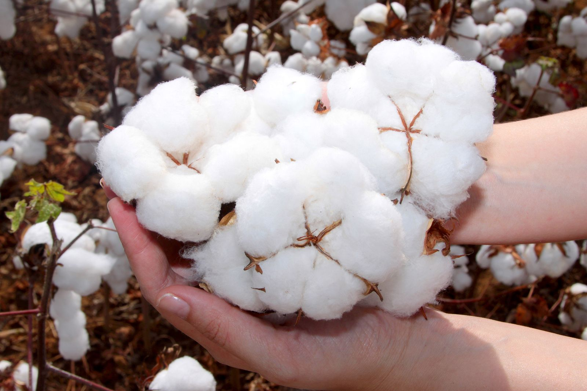
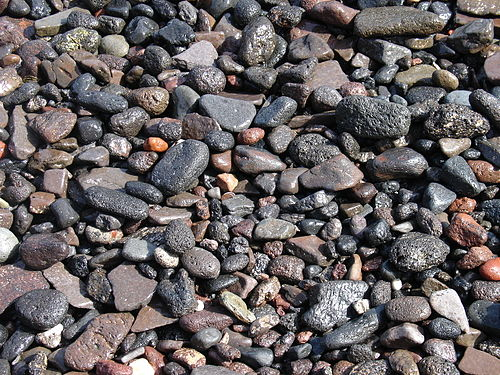
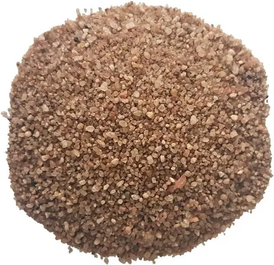
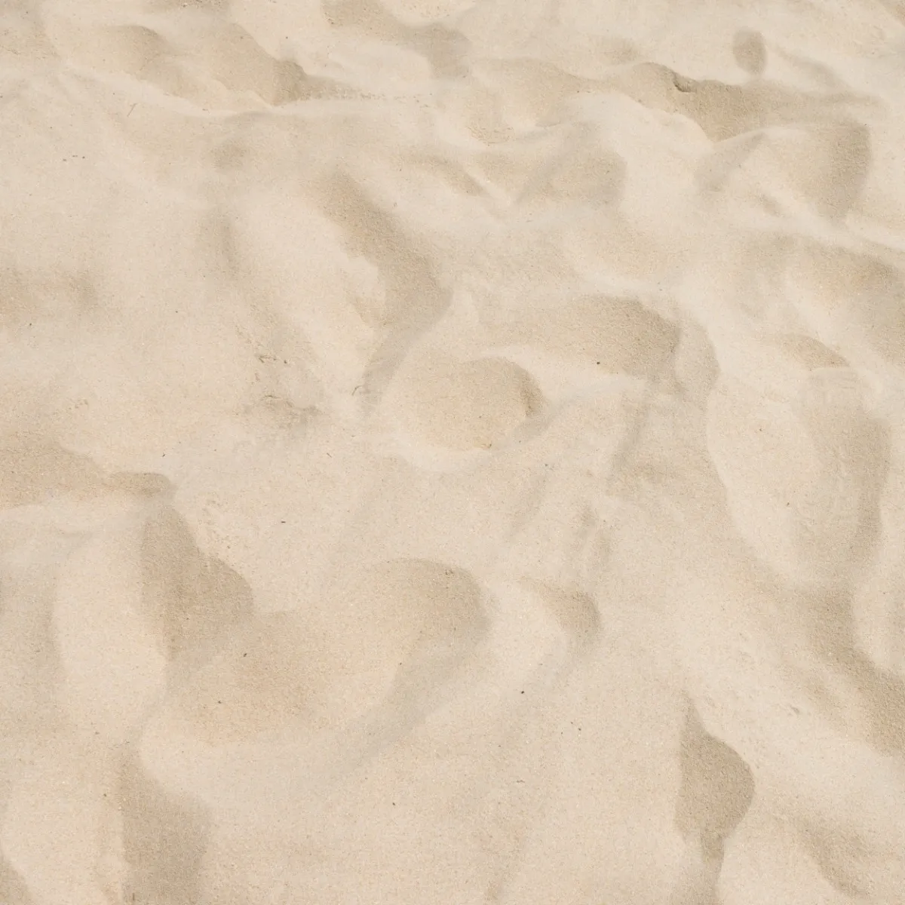
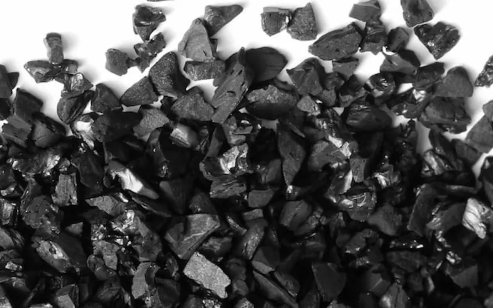

Projeto apresentado na Feitec 2025
Para criar um filtro de água caseiro com uma garrafa PET, você usa camadas de diferentes materiais para purificar a água por meio da filtragem. Cada material tem uma função específica para remover impurezas. É importante saber, no entanto, que este tipo de filtro não torna a água totalmente potável, pois não consegue eliminar microrganismos como vírus e bactérias.
Como Montar e o Que Cada Elemento Faz!?
Para montar o filtro, você corta o fundo da garrafa PET e a vira de ponta-cabeça. A tampa, que fica para baixo, deve ter um furo para a água filtrada sair. As camadas dos materiais são adicionadas de baixo para cima, na seguinte ordem:
Função: É a primeira camada e atua como uma barreira inicial para as maiores partículas. Ele impede que os materiais filtrantes, como a areia e o carvão, saiam da garrafa e ajuda a segurar as impurezas mais visíveis da água.
Função: Esta camada serve para segurar as partículas maiores de sujeira e também ajuda a estabilizar as camadas superiores. O espaço entre as pedras permite que a água passe, retendo folhas, galhos pequenos e outras impurezas grandes.
Função: Atua como um filtro mais refinado, removendo partículas de sujeira menores que o cascalho não consegue reter. A água passa por entre os grãos de areia, deixando para trás sedimentos e outras impurezas.
Função: Esta é a camada de filtragem mais importante para remover as partículas em suspensão. Os pequenos grãos de areia fina formam uma barreira densa que retém até as impurezas mais minúsculas, como lodo e argila.
Função: Esta é a camada mais crucial para a purificação. O carvão ativado é poroso e tem a capacidade de absorver e remover substâncias químicas, cloro, pesticidas e odores desagradáveis. Ele age por meio de um processo chamado adsorção, onde as moléculas de contaminantes se ligam à sua superfície.
Quando você despeja a água na parte de cima da garrafa, ela passa por todas essas camadas, de cima para baixo. Cada material retém um tipo diferente de impureza. No final do processo, a água que sai pelo buraquinho na tampa está visualmente mais limpa, mas lembre-se, ela não está livre de vírus e bactérias. Para tornar a água realmente segura para beber, é necessário um método de purificação adicional, como fervê-la ou usar pastilhas de cloro específicas para tratamento de água.